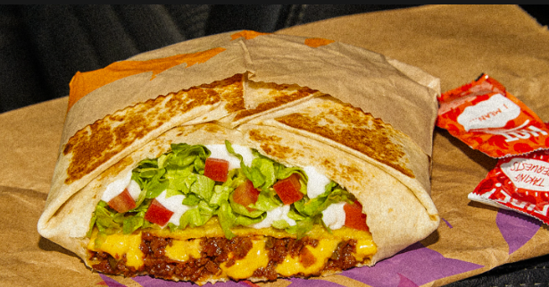

Crunchwrap Supreme
Origin: Taco Bell
Source: Taco Bell Website
Category: Comfort Dish
There's an undeniable satisfaction in indulging in a Crunchwrap Supreme whenever hunger strikes. Fusing a traditional Mexican taco with a generously sized flattened burrito creates a symphony of flavors that resonates perfectly with my taste buds.
Recipe Ingredients
- Tortilla
- Ground Beef
- Circular Taco Shell
- Cheese
- Lettuce
- Sour Cream
- Melted Cheese
- Diced Tomatoes
- Taco Bell Seasoning
- Cheese Sauce
Recipe Steps
- Make the ground beef with taco seasoning, season it well and use Taco Bell spices from Target.
- Lay the tortilla on the grill and put cheese sauce on top of it, smooth it out in a circular motion.
- Next, put the circular crunch taco shell on top of it while adding a generous amount of sour cream on it, don't be shy!
- Add your seasoned to ground beef onto the tortilla.
- Finally, add your diced tomatoes, lettuce, and cheese.
- Wrap your Crunchwrap pentagon style and then grill it on a hot pan for about 4 minutes on medium heat, both sides.
- Take it off the pan and then cut it in half and you have your Crunchwrap supreme.
Additional Food images


Peanut Butter and Jelly Sandwich
Origin: American
Source: Alex Likens
Category: Main Dish

This is a dish that is great at all times of year. Its mix of savory flavors with sweet jelly make sit a favorite dish for many people. This dish is great for any situation whether you are on the go, in a rush, or just looking for a tasty meal in your home.
Recipe Ingredients
- Bread
- Peanut Butter
- Jelly
Recipe Steps
- Take two piece of bread and place them on a plate
- Put a thick layer of jelly on one piece of the bread
- Put a thick layer of peanut butter on the other piece of the bread
- Put the two pieces of bread together so they face each other
Additional Food images


Tomato and Eggs
Origin: China
Source: Own Recipe
Category: Main Dish

Tomato and eggs is a hot dish which originated from China. It is a simple and fast dish to make, but it has good nutritional value. It is a very satisfying food to eat and popularly served with rice and topped with green onions.
Recipe Ingredients
- Tomatoes
- Eggs
- Salt
- Sugar
- Cooking Oil
Recipe Steps
- Crack eggs into a bowl and mix until scrambled
- Cut tomatoes into pieces around the size of your thumb
- Oil a hot pan and cook the eggs until satisfied then remove the eggs
- Re-oil the pan and cook the tomatoes until they loosen
- Combine eggs and tomatoes and season with salt and sugar
Additional Food images


Back To The Top